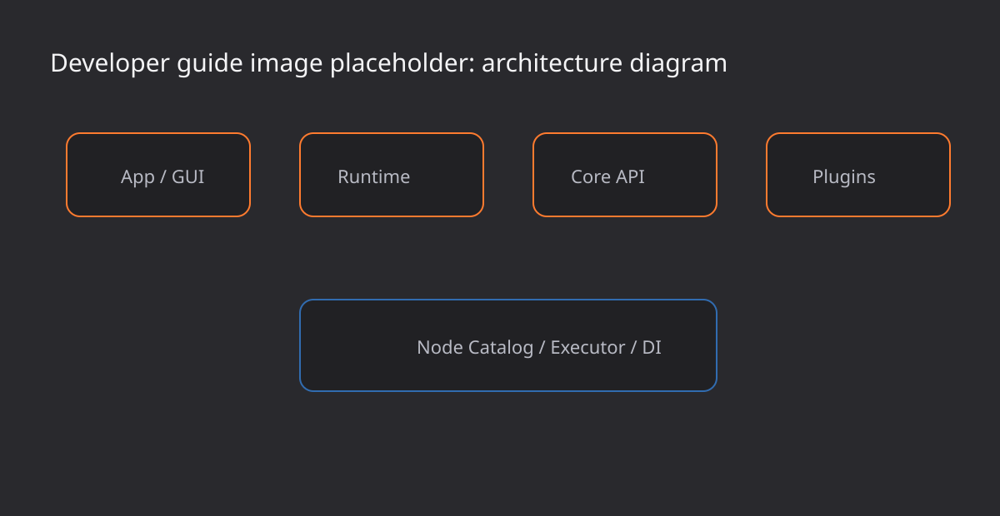
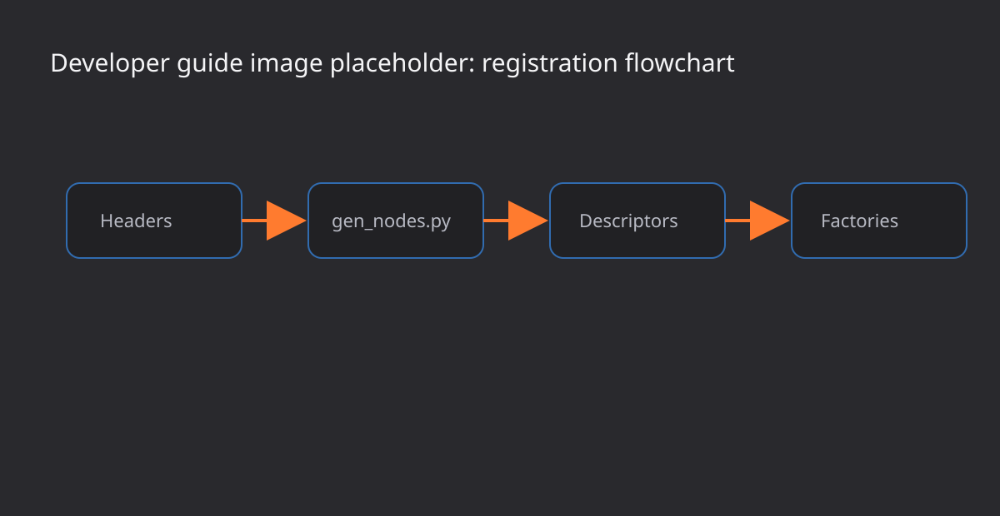

Develop CV_HUB plugins and runtime features
This guide explains the internal layers, plugin pattern, generated node registration, descriptors, factories, UI integration, and test expectations.
Architecture overview
CV_HUB is split into Application, Core, Runtime, Plugin, and Presentation layers. Core owns library-independent interfaces and models. Runtime implements execution, validation, the node catalog, and value passing. Plugins adapt external libraries such as OpenCV or Python/ML into CV_HUB's node system. Presentation renders the graph editor using Dear ImGui and imnodes.

Dependency direction
Dependencies point inward. Core does not know OpenCV, PyTorch, or ImGui. Plugins and GUI code depend on Core/Runtime interfaces, which keeps the platform extensible.
Main responsibilities
- Application: DI setup, plugin registration, CLI/GUI entry points.
- Core: NodeDescriptor, PortDescriptor, ValueBase, INode, INodeFactory.
- Runtime: NodeCatalog, FunctionNodeGenerator, PipelineExecutor, PythonRuntime.
- Plugin: function introspection, type conversion, factory registration.
- Presentation: node list, graph editing, property editing, preview, logs.
Registration and execution flow
Library functions are not listed directly in the UI. Function metadata is first converted into FunctionDescriptor, then the shared FunctionNodeGenerator creates NodeDescriptor objects. At runtime, descriptors and factories create executable node instances for the pipeline executor.

Build-time generation
The OpenCV plugin uses tools/gen_nodes.py to parse headers and generate opencv_auto_nodes.cpp. Generated code provides getAutoDescriptors() and getAutoRegistry(). The handwritten plugin source only contains stateful/source nodes and merges the generated registry.
getAutoDescriptors() -> std::vector<FunctionDescriptor>
getAutoRegistry() -> std::unordered_map<std::string, FactoryFn>Runtime execution
- Read available nodes from NodeCatalog.
- Build a PipelineGraph from the GUI or JSON.
- Validate types, required parameters, and cycles.
- Create node instances through factories.
- Run ready DAG nodes through a bounded worker pool.
- Pass outputs as
std::shared_ptr<const ValueBase>.
Add a plugin
New library plugins live under plugins/<lib>. Plugin C++ sources should not hard-code the full list of library functions. Instead, a Python script parses headers or manifests at build time and generates node-registration code.
plugins/<lib>/CMakeLists.txt
plugins/<lib>/src/<lib>_helpers.hpp
plugins/<lib>/src/<lib>_plugin.cpp
plugins/<lib>/tools/gen_nodes.pyCMake shape
Use add_custom_command to generate C++ and compile it with the handwritten plugin source. Plugin switches should follow CVHUB_BUILD_PLUGIN_<NAME>.
helpers.hpp
Keep library-specific conversions in helpers. Do not leak OpenCV, PyTorch, or other external types into Core interfaces.
Node model
NodeDescriptor is shared by UI and Runtime. It contains the stable node ID, display name, library, function name, category, kind, inputs, outputs, parameters, UI metadata, and factory key.
- IDs should be stable, for example
opencv.resize. - Display names should be readable.
- Ports drive validation.
- Parameters drive the property panel and JSON save/load.
factoryKeyconnects descriptors to factories.
UI integration
The GUI renders from descriptors, graph state, preview state, and interfaces. It should not reference concrete OpenCV node implementations directly. Detailed editing belongs in the properties panel; imnodes bodies stay compact.
File dialogs
Graph JSON save/load is exposed through File menu actions. macOS uses NSOpenPanel / NSSavePanel, Windows uses IFileDialog, and Linux uses zenity/kdialog.
Testing
- Core graph validation: type mismatches, cycles, missing parameters.
- Node catalog: descriptor and factory registration.
- Plugin registration: OpenCV nodes are present.
- Python workers: success, structured failures, timeouts, invalid responses.
cmake --build build --config Release
ctest --test-dir build --output-on-failure